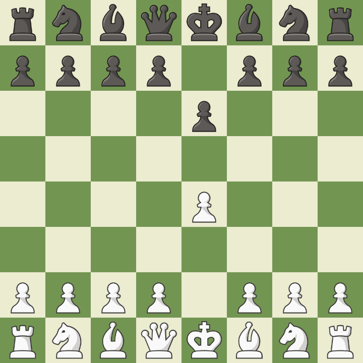

Siciliana
A Defesa Siciliana é uma abertura de xadrez, sendo uma das respostas mais populares e de maior pontuação ao movimento inicial das brancas.
Acontece após 1.e4 c5. É uma resposta agressiva das pretas ao peão do rei, buscando desequilibrar a partida desde o início. Cria chances assimétricas e é muito usada por jogadores que buscam contra-ataque.
